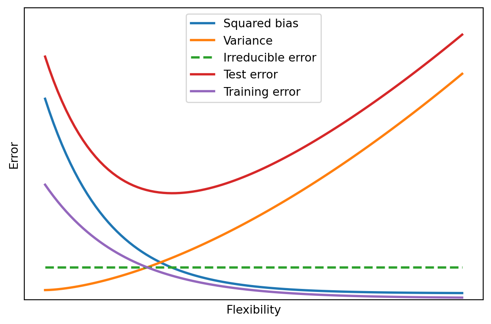

Answer key, Problem set 2: Bias, variance, and neighbors
STA 363 | Instructor copy
1.
In class we showed test MSE as the sum of squared bias, variance, and irreducible error, plotted against flexibility.
Any decreasing squared-bias curve and any increasing variance curve earn full credit as long as the shapes are right and the reasoning in parts c and d matches the curves the student drew. The curves below are one choice.
(a)
Define
flexibility = np.linspace(1, 20, 100). Choose a decreasing curve for squared bias and an increasing curve for variance, each a function offlexibilitythat you pick yourself, and plot the two together.
Squared bias falls as flexibility rises because a more flexible method can match a wider range of shapes for \(f\). Variance rises because a more flexible method has more freedom to chase whatever is specific to the training sample.
(b)
Using the bias-variance decomposition formula from lecture, compute a test error curve as squared bias plus variance plus a constant irreducible error, and add it to your plot.
The decomposition from lecture is \[ \text{E}\left[(y_0 - \hat f(x_0))^2\right] = \text{Bias}(\hat f(x_0))^2 + \text{Var}(\hat f(x_0)) + \text{Var}(\varepsilon), \] so the test error curve is the squared-bias curve plus the variance curve plus a flat irreducible error. Here \(\text{Var}(\varepsilon) = 1\).
(c)
Explain, using your own curves, why test error is minimized at an intermediate flexibility rather than at either extreme.
At low flexibility the squared-bias term is large and dominates the sum, so test error is high. At high flexibility the variance term is large and dominates, so test error is high again. Both terms cannot be small at the same extreme, but there is an interior flexibility where squared bias has fallen a lot and variance has not yet grown much, and the sum reaches its minimum there.
(d)
Training error is not part of the decomposition formula. Add a training error curve to your plot that stays below the test error curve everywhere, and explain why that ordering has to hold.
Training error decreases monotonically toward zero as flexibility grows, because a flexible enough method can bend to fit the training points it was given. It tends to stay below test error because the fit is evaluated on the same points that were used to choose it, so could be overfitting to the noise in that particular sample. Test error is measured on new points where that same noise-fitting does not help and in fact hurts, and no method can push test error below \(\text{Var}(\varepsilon)\) while training error can go to 0.
2.
Predict Y at X1 = X2 = X3 = 0 using K-nearest neighbors.
| Obs | X1 | X2 | X3 | Y |
|---|---|---|---|---|
| 1 | 0 | 3 | 0 | Red |
| 2 | 2 | 0 | 0 | Red |
| 3 | 0 | 1 | 3 | Red |
| 4 | 0 | 1 | 2 | Green |
| 5 | -1 | 0 | 1 | Green |
| 6 | 1 | 1 | 1 | Red |
(a)
Compute the Euclidean distance from the test point to each of the six observations. You may use numpy rather than a calculator.
The test point is the 0 for all predictors, so each distance is the norm of the row.
Obs 1: distance = 3.000 (Red)
Obs 2: distance = 2.000 (Red)
Obs 3: distance = 3.162 (Red)
Obs 4: distance = 2.236 (Green)
Obs 5: distance = 1.414 (Green)
Obs 6: distance = 1.732 (Red)| Obs | Distance | Y |
|---|---|---|
| 1 | 3.000 | Red |
| 2 | 2.000 | Red |
| 3 | \(\sqrt{10} \approx 3.162\) | Red |
| 4 | \(\sqrt{5} \approx 2.236\) | Green |
| 5 | \(\sqrt{2} \approx 1.414\) | Green |
| 6 | \(\sqrt{3} \approx 1.732\) | Red |
(b)
What is the prediction with K = 1? Which observation determines it?
The prediction is Green. The closest observation is Obs 5 at distance \(\sqrt{2}\), and it is Green.
(c)
What is the prediction with K = 3?
The three nearest are Obs 5 (Green), Obs 6 (Red), and Obs 2 (Red). The majority is Red, so the prediction is Red.
(d)
If the true Bayes decision boundary here is highly non-linear, would you expect the best K to be large or small? Explain.
Small. Small \(K\) makes the fit flexible and local, so it can follow a wiggly boundary; large \(K\) averages over a big neighborhood and produces a nearly linear boundary which would have high bias in this case.
3.
In p dimensions, capturing a fraction r of the training observations inside a hypercube whose sides are a fraction s of each predictor’s full range requires \(s = r^{1/p}\).
(a)
Compute s for r = 0.10 at p = 1, 2, 5, 10, 20, and 100.
p = 1: s = 0.1000
p = 2: s = 0.3162
p = 5: s = 0.6310
p = 10: s = 0.7943
p = 20: s = 0.8913
p = 100: s = 0.9772| \(p\) | \(s\) |
|---|---|
| 1 | 0.100 |
| 2 | 0.316 |
| 5 | 0.631 |
| 10 | 0.794 |
| 20 | 0.891 |
| 100 | 0.977 |
(b)
The KNN slide states that with p = 20, capturing 10% of the data needs about 80% of every predictor’s range. Does your value from part a agree?
Yes. At \(p = 20\) the formula gives \(s = 0.10^{1/20} \approx 0.89\), so the hypercube has to span about 89% of every predictor’s range to enclose 10% of the data, which matches the “about 80%” statement on the slide.
(c)
Explain in one or two sentences why this makes K-nearest neighbors a poor choice when p is large, even after the predictors have been scaled.
When \(p\) is large, the neighborhood needed to encompass even a small fraction of the training data covers almost the whole range of every predictor, so a point’s “nearest” neighbors are not actually close to it in most coordinates.
4.
The
Caravandata has 85 numeric predictors describing each customer’s demographics and policy ownership, and aPurchasecolumn recording whether they bought caravan insurance.
(a)
This is a rare-outcome problem. Compute the error rate of always predicting no purchase, and keep that number in mind for the rest of this question.
Purchase is Yes for 348 of 5822 customers, so always predicting no purchase has an error rate of about 0.060.
always-no error rate: 0.0598(b)
Split the data 70/30 with
random_state=363andstratify=y_car. Fit a scaled 5-nearest-neighbor classifier using all 85 predictors and report the test error.
The test error is about 0.060, essentially the always-no rate. The model predicts No for almost every test customer.
test error, 85 predictors: 0.0595(c)
Find the 5 predictors most correlated with
y_car, refit the same scaled 5-nearest-neighbor model using only those 5 columns, and report the test error.
The five predictors most correlated with y_car are PPERSAUT, APERSAUT, APLEZIER, PWAPART, and MKOOPKLA. Refitting on those five columns gives a test error of about 0.060 again.
top 5: ['PPERSAUT', 'APERSAUT', 'APLEZIER', 'PWAPART', 'MKOOPKLA']
test error, 5 predictors: 0.0595(d)
Connect parts b and c back to question 3. Did cutting p from 85 to 5 help, hurt, or make little difference here? Is that what the curse of dimensionality would predict?
Cutting \(p\) from 85 to 5 made little difference to the test error here: both models land at roughly the null rate of 0.060. Question 3 says high \(p\) makes KNN neighborhoods meaningless, so dropping to 5 predictors should have helped. It did make the neighborhoods more local, but the outcome is so rare that any 5 neighbors are almost always all No, so both models still predict No for nearly everyone and neither beats the baseline on raw error rate. The curse of dimensionality is real, but with a 6% positive rate raw error rate is the wrong yardstick, and a fair comparison would look at how many actual purchasers each model catches.
5.
In class we named four ways to change flexibility: polynomial degree or spline degrees of freedom, K in KNN, the number of predictors, and the amount of training data.
(a)
For each of the four ways, say which direction, more or less, makes a method more flexible.
- Polynomial degree or spline degrees of freedom: more is more flexible.
- \(K\) in KNN: less, meaning small \(K\), is more flexible.
- Number of predictors: more is more flexible.
- Amount of training data: less. More data does not change the model class, but it drives down variance, which is what lets a flexible method be used without overfitting; a small sample forces you toward a rigid method. Either phrasing earns credit if explained.
(b)
Explain why adding predictors increases flexibility even when the model class itself, a straight line for example, does not change.
Adding a predictor gives the fit another direction it can move in to reduce training error, so it can match more patterns in the training sample, including noise. A plane in three inputs can fit any tilt that a line in two inputs can and more besides, so residuals can only go down and the variance of the fit goes up. The model class is still linear, but the space of functions it can produce has grown.
Data from James, G., Witten, D., Hastie, T., Tibshirani, R., and Taylor, J. (2023). An Introduction to Statistical Learning with Applications in Python. Springer.